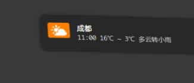

Oh My Libnotify
About libnotify
libnotify is a bubble top desktop method of notification, many Languages' API are supported. Detail information? I guess archwiki is a good helper: archwiki libnotify
Seems that there's a little trouble under windows, but I am not fucking care about that.
What to do with libnotify
libnotify is just a tool of notification.Ya...notification...let me guess, OMG, which should be good way of reminder..Bingo!!!
What I do with it
- weather notify
- gmail checker
- QQ online?
Screenshots (weather only)

Code of main part
1 2 3 4 5 6 7 8 9 10 11 12 13 14 15 16 17 18 19 20 21 22 23 24 25 26 27 28 29 30 31 32 33 34 35 36 37 38 39 40 41 42 43 44 45 | #!/usr/bin/env python #-*- coding:utf-8 -*- import urllib import socket import os import urlparse try: import simplejson as json except: import json TIMEOUT = 10 def _gen_link(base_link, zip_code): if not base_link.startswith('http://'): base_link = 'http://' + base_link link = urlparse.urljoin(base_link, zip_code + '.html') return link def _get_json(link): if os.path.isfile(link): with open(link, 'rb') as f: page = f.read() return json.read(page) socket.setdefaulttimeout(TIMEOUT) try: page = urllib.urlopen(link) return json.load(page) except: return False def _down_load_img(base_link, save_dir, name): save_dir = os.path.expanduser(save_dir) if not os.path.exists(save_dir): os.makedirs(save_dir) url = urlparse.urljoin(base_link, name) name = os.path.join(save_dir, name) urllib.urlretrieve(url, name) def notify(title, msg, icon=None): icon = os.path.expanduser(icon) title = title.encode('utf-8') msg = msg.encode('utf-8') os.system('notify-send "%s" "%s" "--icon=%s"' % (title, msg, icon)) |
Then cronjob it
0 */1 * * * export DISPLAY=:0.0 && /home/mocker/.bin/cronjobs/weather.py
cause cronjob use different evironment with your shell, so...export DISPLAY=:0.0
required
enjoy it!!!
Comments !